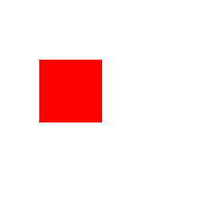
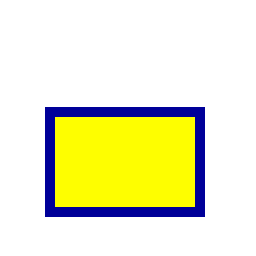
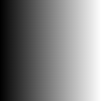
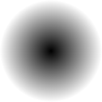
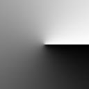
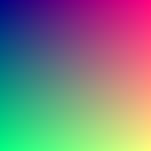

The <canvas> element allows to render graphics on-the-fly within its boundaries. This tutorial gives a relatively quick rundown of how that works.
A canvas does very little on its own. All drawing is done in JavaScript, and you can start by following these steps:
First, you'll need to get a reference to the canvas you'd like to draw with. There are several ways to accomplish this — such as using document.getElementById() to find one that's already on the page, or using document.createElement() to create a new one. Pretty much all of the examples on this site use the latter method.
Next, you'll need to obtain a context for the canvas you're using. This is done by calling getcontext() function of the canvas. This function takes a single argument that defines the type of context to be obtained — since our main focus is 2D graphics, this argument should be set to "2d". There are other context types, but they do completely different things, and would require completely separate tutorials of their own.
Once you're done with that, you can draw on the canvas using the context's drawing functions. Of course, if you used the createElement to get the canvas, you'll need to add it to the document first; it isn't done automatically. Make sure to include a call to document.body.appendChild() with the canvas as an argument somewhere in your code, unless you plan on doing something that requires an invisible canvas.
Here's a simple example that showcases the above steps. The comments should explain everything:
//Create the canvas and adjust its properties
var canvas = document.createElement("canvas");
canvas.width = 256;
canvas.height = 256;
//Obtain context
var ctx = canvas.getContext("2d");
//Draw graphics
ctx.fillStyle = "red";
ctx.fillRect(50, 76, 80, 80);
//Add the canvas to the document
document.body.appendChild(canvas);And here's the result:
The colors of shapes on the canvas are influenced by two properties: the Stroke, and the Fill. The stroke is the outline of the shape, while the fill is the color inside the shape.
For example, this rectangle was drawn with a blue stroke, and yellow fill:
Here's the code that was used to draw this rectangle:
//Create the canvas and adjust its properties
var canvas = document.createElement("canvas");
canvas.width = 256;
canvas.height = 256;
//Obtain context
var ctx = canvas.getContext("2d");
//Draw graphics
ctx.fillStyle = "#efef00";
ctx.fillRect(50, 112, 150, 100);
ctx.strokeStyle = "#000099";
ctx.lineWidth = 10;
ctx.strokeRect(50, 112, 150, 100);
//Add the canvas to the document
document.body.appendChild(canvas);As you can see, the stroke and fill colors are set using the context's strokeStyle and fillStyle properties, respectively. Both properties can be set to any CSS color type, a full list of which can be found here.
The stroke size can be adjusted by setting the lineWidth property. By default, it's 1, but you can set the number higher than that.
Also, notice how you can instruct the canvas to draw either a filled rectangle or a stroked rectangle.
In addition to standard color, you can also use gradients. They can be applied to either fillStyle or strokeStyle, and have their own unique properties.
The colors shown in a gradient are determined by its stops. They're added using the gradient's addColorStop() function. It takes two arguments, a number from 0-1 representing where in the gradient the stop occurs, and the color itself.
The following code will render a square with a simple gradient as a fillStyle:
var canvas = document.createElement("canvas");
canvas.width = 128;
canvas.height = 128;
var ctx = canvas.getContext("2d");
There are three types of gradients you can use. The first one is the Linear gradient, where the colors transition from one to the next in a given direction.
let grd = ctx.createLinearGradient(
0, //Left (x1)
0, //Top (y1)
canvas.width, //Right (x2)
0 //Bottom (y2)
);
grd.addColorStop(0, "black");
grd.addColorStop(1, "white");The result should look like this:
The direction a linear gradient's colors travel in depends on the values given to it. For example, as shown here, if the Right value is greater than the Left value, the gradient will begin on the left and end on the right.
In a Radial gradient, the colors radiate outwards from a center point. The size and coordinates of two circles are used to determine what this looks like.
let grd = ctx.createRadialGradient(
canvas.width / 2, //Inner circle x-coordinate
canvas.height / 2, //Inner circle y-coordinate
0, //Inner circle radius
canvas.width / 2, //Outer circle x-coordinate
canvas.height / 2, //Outer circle y-coordinate
Math.min(canvas.width / 2, canvas.height / 2) //Outer circle radius
);
grd.addColorStop(0, "black");
grd.addColorStop(1, "white");If you replace the part of your code that creates the gradient with this code, you'll get this:
In a Conic gradient, the colors revolve around a center point.
let grd = ctx.createConicGradient(
0, //Starting angle
canvas.width / 2, //X-coordinate
canvas.height / 2 //Y-coordinate
);
grd.addColorStop(0, "black");
grd.addColorStop(1, "white");Copying and pasting this code into yours will give you this:
This is, of course, barely scratching the surface of what canvas gradients can do. Experiment a bit and see what you can do with them!
One of the simplest shapes to draw on the canvas is the humble rectangle. You do so using the fillRect() or strokeRect() functions. The former will create a rectangle with color determined by fillStyle, while the latter creates the outline of a rectangle, with color determined by strokeStyle. Here's an example of what both of those look like:
And here's the code that was used to draw them:
var canvas = document.createElement("canvas");
canvas.width = 192;
canvas.height = 192;
var ctx = canvas.getContext("2d");
ctx.fillStyle = "red";
ctx.fillRect(64, 64, 64, 64); //Draw the rectangle
ctx.strokeStyle = "blue";
ctx.strokeRect(80, 80, 64, 64) //Stroke the rectangle
document.body.appendChild(canvas);You can also draw rectangles using paths, but it requires more code than just using those functions.
ctx.fillStyle = "red";
ctx.beginPath();
ctx.rect(64, 64, 64, 64); //Draw the rectangle
ctx.fill();
ctx.strokeStyle = "blue";
ctx.beginPath();
ctx.rect(80, 80, 64, 64); //Stroke the rectangle
ctx.stroke();Most other shapes fall under the category of paths. Paths are a series of points with drawing instructions between them. For example, a series of points with lines between them, or a filled irregular polygon.
Drawing using paths is a step-by-step process. First, you call the context's beginPath() function.
Now that you've started your path, you're now free to start adding points. Pick a position on the canvas where you'd like to start drawing with moveTo(), then start drawing with one of the path drawing functions:
lineTo() creates a straight line between the point you're currently at and the point you passed to the function.arc() creates an arc line that curves around a specified point with a given radius.bezierCurveTo() creates a cubic bezier curve.quadraticCurveTo() creates a quadratic bezier curve.moveTo() again to skip to a given position without drawing anything.Once you're done with that, if you were drawing a shape, your best course of action is to call closePath() after you stop drawing. This draws a line from the point you ended at to the first point on your path, closing the shape.
You're now finished with your path, but nothing's rendered yet. To do that, you can either use the stroke() function to render what you drew with the current strokeStyle, or fill() to fill the resulting shape in.
To end this section, here's an example of a shape created using a path:
var canvas = document.createElement("canvas");
canvas.width = 192;
canvas.height = 192;
var ctx = canvas.getContext("2d");
function drawStar(cx, cy, spikes, outerRadius, innerRadius) {
let rot = Math.PI/2*3;
let x = cx;
let y = cy;
let step = Math.PI/spikes;
//Begin drawing
ctx.beginPath();
ctx.moveTo(cx, cy - outerRadius);
//Since a star is essentially a set of points on two circles, we draw by iterating through points on each circle
for (i = 0; i < spikes; i++) {
//Draw outer radius
x = cx + Math.cos(rot)*outerRadius;
y = cy + Math.sin(rot)*outerRadius;
ctx.lineTo(x, y);
rot += step;
//Draw inner radius
x = cx + Math.cos(rot)*innerRadius;
y = cy + Math.sin(rot)*innerRadius;
ctx.lineTo(x, y);
rot += step;
}
//Finish up drawing
ctx.lineTo(cx, cy - outerRadius);
ctx.closePath();
ctx.lineWidth = 6;
ctx.strokeStyle = "gold";
ctx.stroke();
ctx.fillStyle = "yellow";
ctx.fill();
}
drawStar(canvas.width / 2, canvas.height / 2, 5, 80, 32);
document.body.appendChild(canvas);It's a gold star!
ImageData is a JavaScript object that represents a given area of pixel data on a canvas. This has a number of uses, but the most relevant for our purposes is using blank ImageData to create a new image.
The data itself is stored in the ImageData's data property, which is an incredibly long array full of integers between 0 and 255. Each color channel of a given pixel in this array is represented by a set of four numbers, serving as the Red, Green, Blue, and Alpha channels, respectively. As a result, editing the color value of a pixel usually looks somewhat like this:
imageData.data[1] = 63; //Red
imageData.data[2] = 255; //Green
imageData.data[3] = 63; //Blue
imageData.data[4] = 255; //AlphaOf course, when you're handling ImageData, you're usually working on more than just one pixel. To edit more than one pixel at once, you'll need to use some kind of loop.
for (i = 0; i < imageData.data.length; i += 4) {
imageData.data[i] = 63; //Red
imageData.data[i + 1] = 63; //Green
imageData.data[i + 2] = 255; //Blue
imageData.data[i + 3] = 255; //Alpha
}That's simple enough, but there's one problem — the way color information is stored means that you don't have direct access to X- or Y-coordinates. Luckily, there are two ways to get them from an array index:
The first way is to set the loop's limit to the width of the ImageData times the height, and get the coordinates by doing mathematical operations on the iterator value. In this case, the Y-coordinate is the quotient of the iterator value and the width of the ImageData (or canvas, if you prefer that), while for the X-coordinate, you subtract the product of the y-axis and width from the iterator value.
Here's what that might look like:
var width = imageData.width;
var height = imageData.height;
for (i = 0; i < width * height; i += 4) {
let y = Math.floor(i / width); //y-coordinate
let x = i - y / width //x-coordinate
let c = 128 + (128 * Math.sin((x + y) / 16)) //Sine pattern, as an example
imageData.data[i] = 63; //Red
imageData.data[i + 1] = 63; //Green
imageData.data[i + 2] = 255; //Blue
imageData.data[i + 3] = 255; //Alpha
}The second method is to get the X- and Y-coordinates from two nested loops, and calculate the index from those. In this case, the formula for the current index is (y * width + x) * 4. This is the method that all of the examples on this site that require X- and Y-coordinates use.
Here's what that looks like in action:
for (y = 0; y < imageData.height; y++) {
for (x = 0; x < imageData.width; x++) {
let id = (y * imageData.width + x) * 4; //ID value
let c = x ^ y; //example
imageData.data[id] = c; //Red
imageData.data[id + 1] = c; //Green
imageData.data[id + 2] = c; //Blue
imageData.data[id + 3] = 255; //Alpha
}
}There are two ways to create fresh ImageData — either create it using the context's createImageData() function, or create one directly with the constructor new ImageData(). Regardless of which method you use, they take two arguments for the width and the height.
The following code generates an image using ImageData, then renders it to the canvas.
//Create the canvas
var canvas = document.createElement("canvas");
canvas.width = 256;
canvas.height = 256;
//Obtain the context and create the ImageData
var ctx = document.getContext("2d");
var imageData = ctx.createImageData(canvas.width, canvas.height);
//Edit the ImageData
for (y = 0; y < canvas.height; y++) {
for (x = 0; x < canvas.width; x++) {
let id = (y * canvas.width + x) * 4;
imageData.data[id] = x; //Red
imageData.data[id + 1] = y; //Green
imageData.data[id + 2] = 128; //Blue
imageData.data[id + 3] = 255; //Alpha
}
}
//Draw the ImageData on the canvas, and add the canvas to the document
ctx.putImageData(imageData, 0, 0);
document.body.appendChild(canvas);The result should look somewhat like this:
